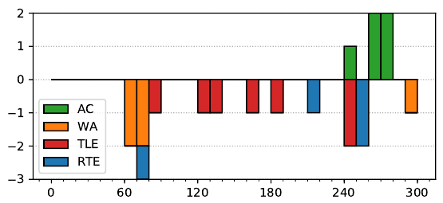

ACM ICPC World Finals 2019
Solved by 5 teams.
First solved after 245 minutes.
Shortest team solution: 3792 bytes.
Shortest judge solution: 3052 bytes.

This was probably the problem that the judges underestimated the most. Like the also underestimated problem C, it is mostly an implementation challenge, but not a very painful one.
There are two parts to the problem, both quite standard. The first part is to parse the input programs and to be able to simulate it in a naïve step-by-step way. Since a program may run for a very large number of steps without going into an infinite loop, this will be very slow. So the second part is to speed up the simulation, which we can do with dynamic programming.
There are only 4rc ≤ 6400 possible configurations (position in the grid and heading) that the robot can be in. And there is only some number s ≤ 36 · 100 possible positions in the code that the execution of the program can be in. Thus there are in total at most 4rcs / 2 · 107 possible states that the simulation can be in, and by memoizing the result of each state we get an O(rcs)-time solution. The time limits were generous enough that the memoization could also be done with some dictionary data structure incurring an extra log factor overhead.
The running time can be improved noticeably by only considering the positions in the code that are branch points (that is, i and u commands) and function entry points when memoizing. Between such points the simulation progresses linearly, and while the number of steps taken does not improve when not memoizing them, not caching every single step is much more cache-friendly.